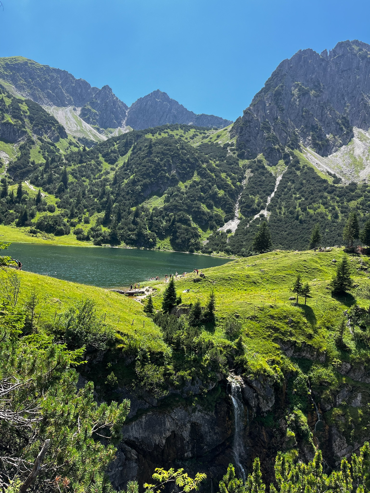
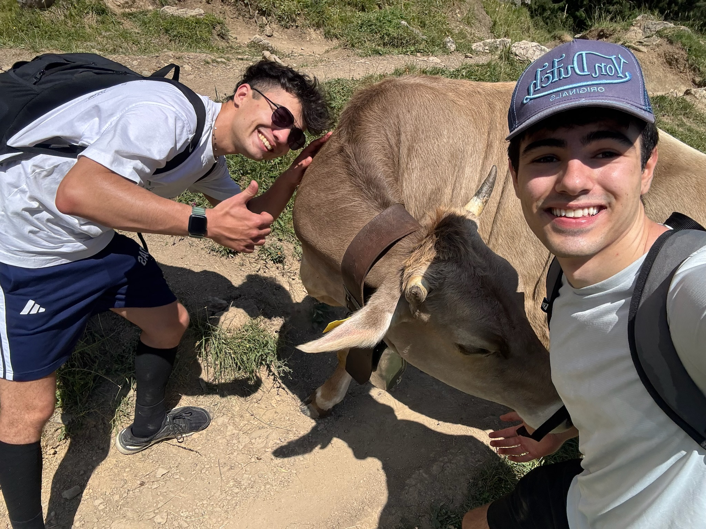

Zu deinem Geburtstag habe ich versucht, unsere Reise in Worte zu fassen – die Orte, die Musik, die Wärme und all die kleinen Momente, die zu unseren wurden. Ich hoffe, es gefällt dir.
Es begann im Juni—
mit Bergen, späten Zügen,
einem Schokocroissant,
und dem Gefühl, dass
„mit dir alles besser ist.“
A World Alone – Lorde
II
Zuhause
Unsere heißen Sommernächte
Die Donau, stille Sommerabende und das Gefühl von Heimat.
Wir fanden Romantik in falschen Abzweigungen,
in Ulm an der Donau,
in Sommerabenden,
die die ganze Welt
kurz stillstehen ließen.
Dann kamen die Nächte
voller Wärme, Lachen, Verlangen—
bis gewöhnliche Orte
sich wie ein Zuhause anfühlten,
weil du da warst.
„Zuhause ist nicht Zuhause, wenn du nicht da bist.“
Michelle Pfeiffer – Ethel Cain
III
Zugehörigkeit
Unser Risiko
Sonnenlicht, Sprache und das Wagnis der Liebe.
Du trägst Spanien in dir:
sein Sonnenlicht, seine Sprache,
den Ort, der dich geprägt hat
und für immer ein Teil
deiner Heimat sein wird.
Und irgendwo zwischen
unseren Lieder und der Stille
wurde Liebe zu einem Risiko—
einem, das ich wieder eingehen würde.
„Du bist das Risiko, ich werde es eingehen.“
Risk – Gracie Abrams
IV
Neunzehn
Unser Leben vor uns
Neue Wege, neue Städte und ein offenes Buch.
Du bist jetzt neunzehn,
dein ganzes Leben liegt noch vor dir,
neue Straßen, neue Städte,
und so vieles, das noch wartet.
„Du hast dein ganzes Leben vor dir, du bist erst 19.“
teenage dream – Olivia Rodrigo

V
Farben
Unsere Schönheit
Sanftheit, Humor, Neugier und die vielen Farben des Lebens.
Ich hoffe, du bewahrst dir deine Sanftheit,
deinen Humor, deine Neugier,
und das wunderschöne Chaos,
das dich so einzigartig macht.
Denn all diese kleinen Momente—
die Berge, der Fluss,
die späten Züge, das Krankenzimmer,
die Lieder und die Nächte—
wurden zu etwas, das ich immer im Herzen trage.
Nicht perfekt,
aber voller Farben,
mit Liebe zusammengewoben.
„Ein Mantel aus vielen Farben.“
Coat of Many Colors – Dolly Parton

VI
Daniel
Unsere Liebe
Ein letzter Wunsch und eine Liebe für alles, was kommt.
Wohin dich das Leben auch führt,
ob nah oder fern,
denk daran, dass du geliebt wurdest—
am Anfang,
in allen Ungewissheiten,
und in allem, was noch vor uns liegt.
Alles Gute zum Geburtstag, Daniel.
Und wo auch immer du bist:
„Ich werde dich immer lieben.“
I Will Always Love You – Dolly Parton
Zu deinem 19. Geburtstag — 8. September
Es begann im Juni—
mit Bergen, späten Zügen,
einem Schokocroissant,
und dem Gefühl, dass
„mit dir alles besser ist.“
A World Alone – Lorde
Wir fanden Romantik in falschen Abzweigungen,
in Ulm an der Donau,
in Sommerabenden,
die die ganze Welt
kurz stillstehen ließen.
Dann kamen die Nächte
voller Wärme, Lachen, Verlangen—
bis gewöhnliche Orte
sich wie ein Zuhause angefühlten,
weil du da warst.
„Zuhause ist nicht Zuhause, wenn du nicht da bist.“
Michelle Pfeiffer – Ethel Cain
Du trägst Spanien in dir:
sein Sonnenlicht, seine Sprache,
den Ort, der dich geprägt hat
und für immer ein Teil
deiner Heimat sein wird.
Und irgendwo zwischen
unseren Lieder und der Stille
wurde Liebe zu einem Risiko—
einem, das ich wieder eingehen würde.
„Du bist das Risiko, ich werde es eingehen.“
Risk – Gracie Abrams
Du bist jetzt neunzehn,
dein ganzes Leben liegt noch vor dir,
neue Straßen, neue Städte,
und so vieles, das noch wartet.
„Du hast dein ganzes Leben vor dir, du bist erst 19.“
teenage dream – Olivia Rodrigo
Ich hoffe, du bewahrst dir deine Sanftheit,
deinen Humor, deine Neugier,
und das wunderschöne Chaos,
das dich so einzigartig macht.
Denn all diese kleinen Momente—
die Berge, der Fluss,
die späten Züge, das Krankenzimmer,
die Lieder und die Nächte—
wurden zu etwas, das ich immer im Herzen trage.
Nicht perfekt,
aber voller Farben,
mit Liebe zusammengewoben.
„Ein Mantel aus vielen Farben.“
Coat of Many Colors – Dolly Parton
Wohin dich das Leben auch führt,
ob nah oder fern,
denk daran, dass du geliebt wurdest—
am Anfang,
in allen Ungewissheiten,
und in allem, was noch vor uns liegt.
Alles Gute zum Geburtstag, Daniel.
Und wo auch immer du bist:
„Ich werde dich immer lieben.“
I Will Always Love You – Dolly Parton